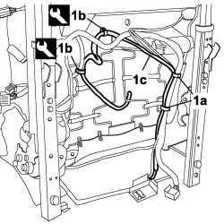
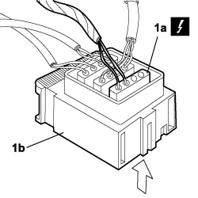
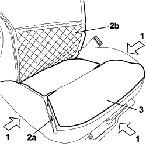
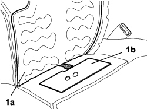
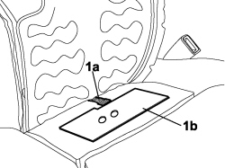

7065A34 PASSENGER PRESENCE SENSOR ON FRONT SEAT FOR INDICATING SEATBELT UNFASTENED R R
- Path
- Procedures > 70 FITTINGS > 7065 SAFETY BELTS AND ACCESSORIES > 7065A FRONT SAFETY BELTS > 7065A34 PASSENGER PRESENCE SENSOR ON FRONT SEAT FOR INDICATING SEATBELT UNFASTENED R R
- Kind
- repair procedure (removal / refitting; the operation number is the code)
- Applies to
- all engines; all production periods
- Interactive page
- https://sloeber94.github.io/elrnDB-fCrm/en/#/194001191
Applies to: all engines; all production periods
 Removing
Removing
 Refitting
Refitting- Open the front side door.
- Turn the ignition key to the OFF position.
- Disconnect the negative battery terminal.
Op. 7045A10 FRONT SEAT (ONE), LEFT OR RIGHT - R.R.
1. Cut the retaining bands (1a), using the special tool release the retaining buttons (1b) and release the wiring (1c).
Tool | Description | Function | Validity |
|---|---|---|---|
1878077000 | Knife | Retainer removal |

Applies to: all engines; all production periods
1. Cut the retaining band (1a), lift up the locking tab (1b) and release the cover (1c).

Applies to: all engines; all production periods
1. Pressing on the side shown by the arrow, release the electrical connection (1a) and release it from the coupling (1b).
Description | Connector | |
|---|---|---|
1a | PASSENGER PRESENCE SENSOR |

Applies to: all engines; all production periods
1. Release the cushion cover on three sides.
2. Cut the rings at the retaining points (2a) necessary to lift up the cover (2b) as illustrated.
3. Carefully detach the heater pad from the cushion.

Applies to: all engines; all production periods
1. Raise the heater pad (1a), detach the presence sensor (1b) carefully from the cushion and remove it releasing the wiring.

Applies to: all engines; all production periods
Refitting
Removing1. Introduce the wiring in the opening in the cushion upholstery and attach the presence sensor as illustrated.

Applies to: all engines; all production periods
- Position the heater pad, position the cover on the upholstery and, using the special tool, attach the retaining rings between the cover and upholstery.
Tool | Description | Function | Validity |
|---|---|---|---|
1878017001 | Pliers for metal points | Fitting new backrest cover retaining rings |
- Fit the lower parts of the cover to the seat frame.
- Fit the the electrical connection for the presence sensor to the coupling.
Description | Connector | |
|---|---|---|
PASSENGER PRESENCE SENSOR |
- Fit the retaining buttons on the bracket under the seat.
- Fit new retaining bands on the wiring.